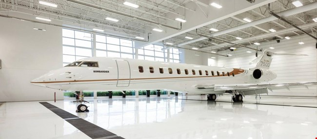

Work Experience
Bombardier Inc
Engineering Associate – Tooling and Logistics
February 2019 - July 2020
Bombardier Aviation, a Canadian staple, and global competitor in the business aviation sector, has been my workplace home for the last year. Serving as a beneficial introduction to the aerospace industry, I have gained a tremendous amount of experience from my role as an engineering associate in the tooling and logistics department. This role included the following responsibilities;
- Daily assistance in aerospace assembly team to support on-going production of 7500 series jets.
- First-hand experience on shop floor and production line builds from start to finish.
- Issued tooling and equipment for aircraft assemblers, recommending the correct tool 97% of the time.
- Continuously logged equipment that is received, exchanged and distributed through use of database.
- Created an efficient method to schedule calibration and re-alignment of tools and equipment.
York University - IDEA LAB
Researcher
April 2017 - February 2018
Previously having worked on the design and development of an Equibiaxial Testing Machine as a Project Engineering Intern (see below), this position as Researcher led me to conduct preliminary research with the testing apparatus in addition to calibrating and verifying the machine. Some more of the tasks I accomplished in this role are listed below;
- Researched innovative testing methods of elastomers.
- Performed FEA through Abaqus for test specimens with complex geometries.
- Conducted and compared uniaxial tension tests with equibiaxial tests to validate machine.
- Created monthly presentations and technical reports, updating stakeholders on project progress.
- Presented findings to professors and peers at Lassonde Summer Conference 2017.
York University - IDEA LAB
Project Engineering Intern
April 2016 - February 2017
Working as a Project Engineering Intern, after completing my second year of studies in Mechanical Engineering was a major accomplishment and a new opportunity for personal development in my field. IDEA – Lab, a laboratory at York University, dedicated to material testing, finite element modelling and additive manufacturing was a great place to start practicing the engineering design process so heavily focused on in our classes. This role included the following tasks;
- Designed and built a fixture to test equibiaxial tension, compatible with a universal testing machine.
- Modeled using SolidWorks CAD to design apparatus whilst consulting with all necessary stakeholders.
- Created bill of materials (BOM) and oversaw procurement of all materials and equipment needed.
- Manufactured all raw material using manual mill, lathe and 3 -Axis CNC mill.
- Sought out capable vendors to manufacture complex components that were unable to be machined in-house.